Weissman is one of the largest dance costume companies in the United States. On-set production artist, print catalog designer, and web/email design for Weissman's annual 136-page dance costume catalog. Production art for two photo shoots in Los Angeles (14 days), catalog designer (InDesign, print + digital), and designer of the editorial marketing banners for the website. Six themed sections, each with a distinct typographic and color identity, unified by a consistent design system across all platforms.
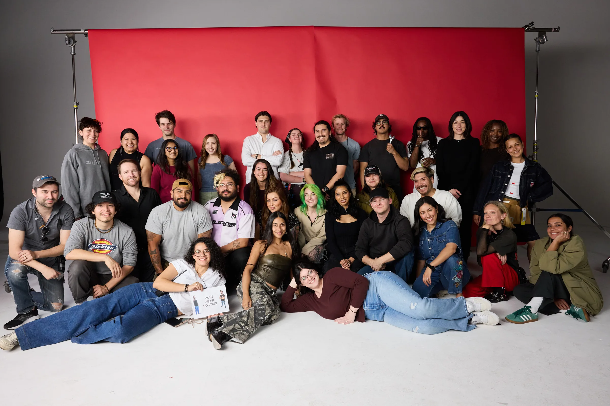
The Catalog
136-page print + digital catalog · InDesign


Website Design
editorial marketing banners for the Weissman Character Edition e-commerce experience

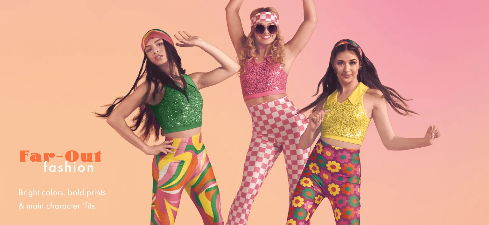
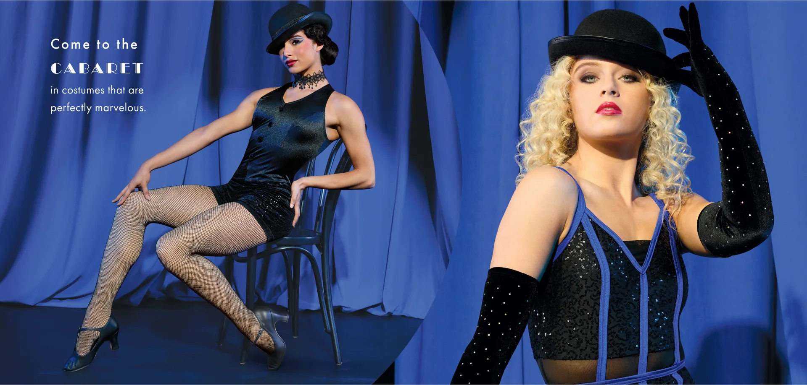
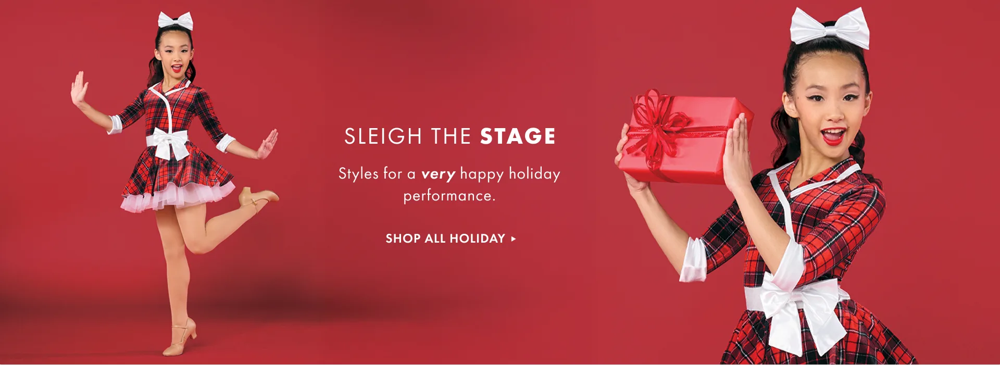
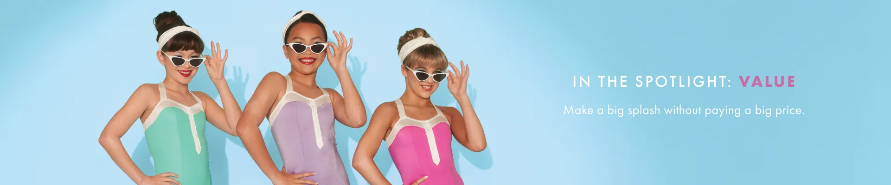

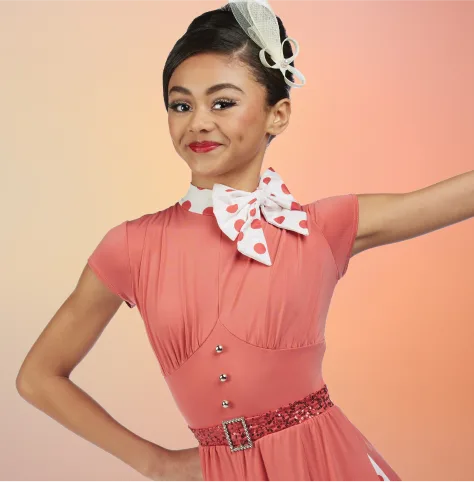
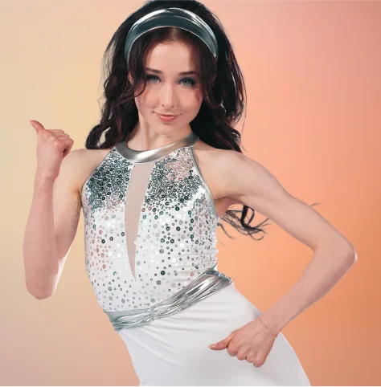
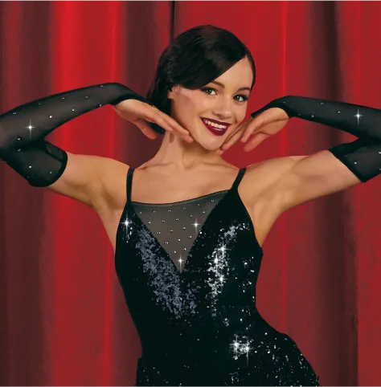
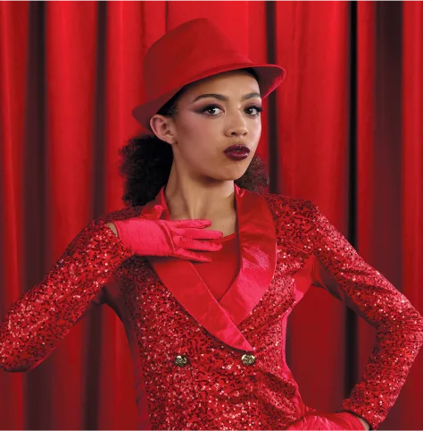
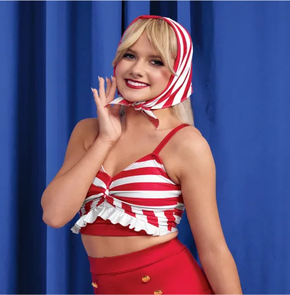
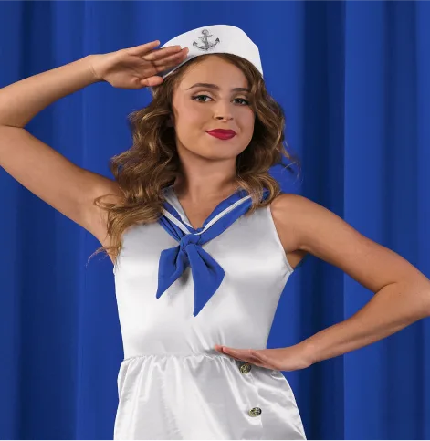
On Set
14 days across two sessions at Quixote Studios, Los Angeles

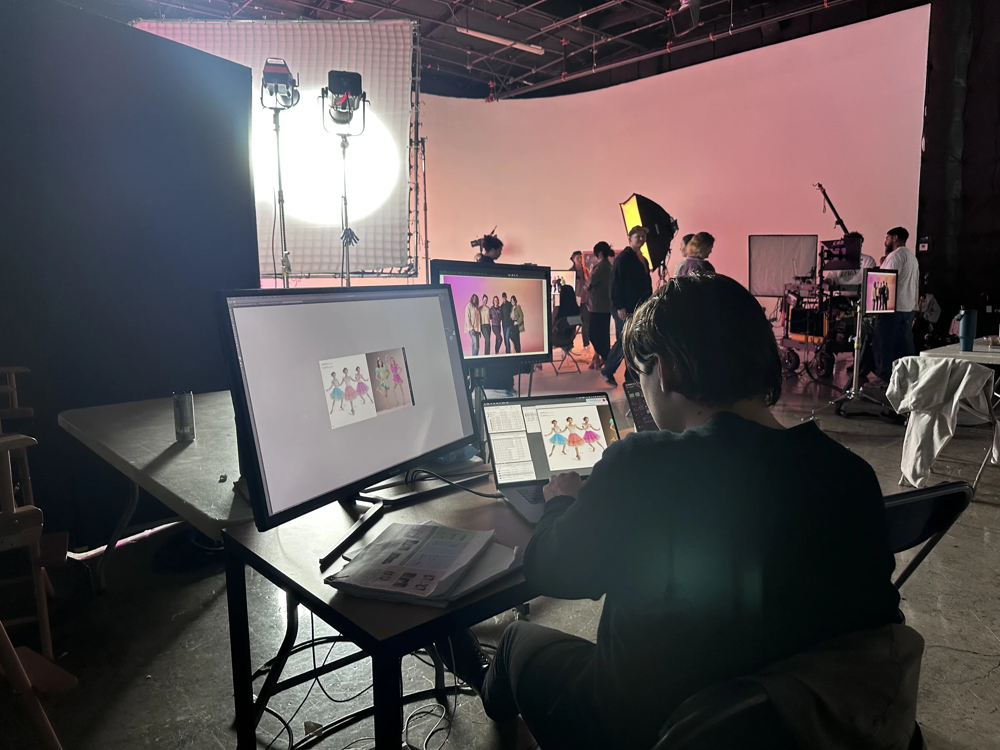
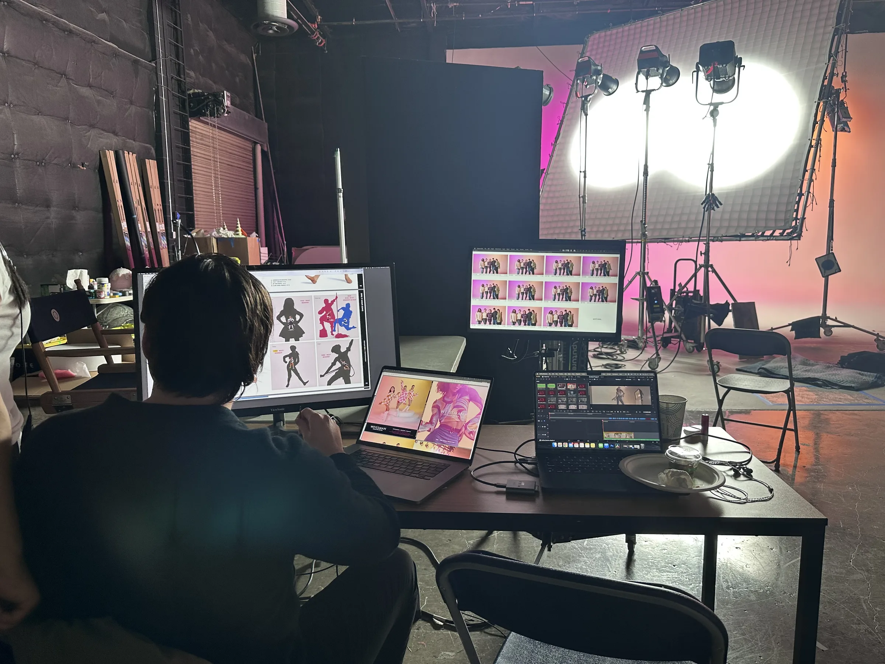
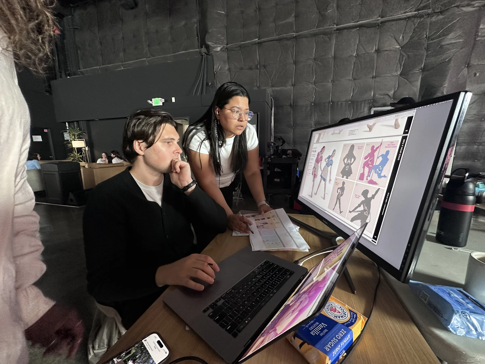
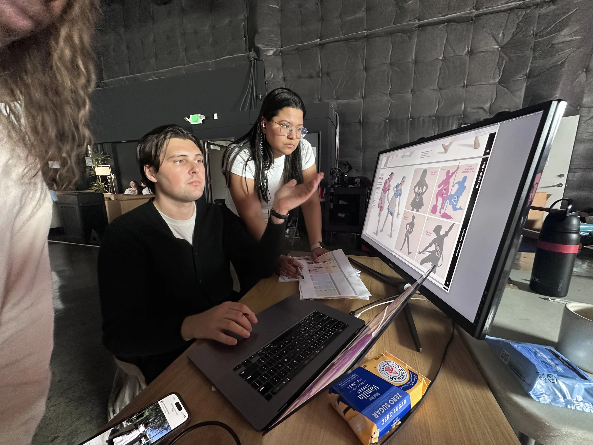
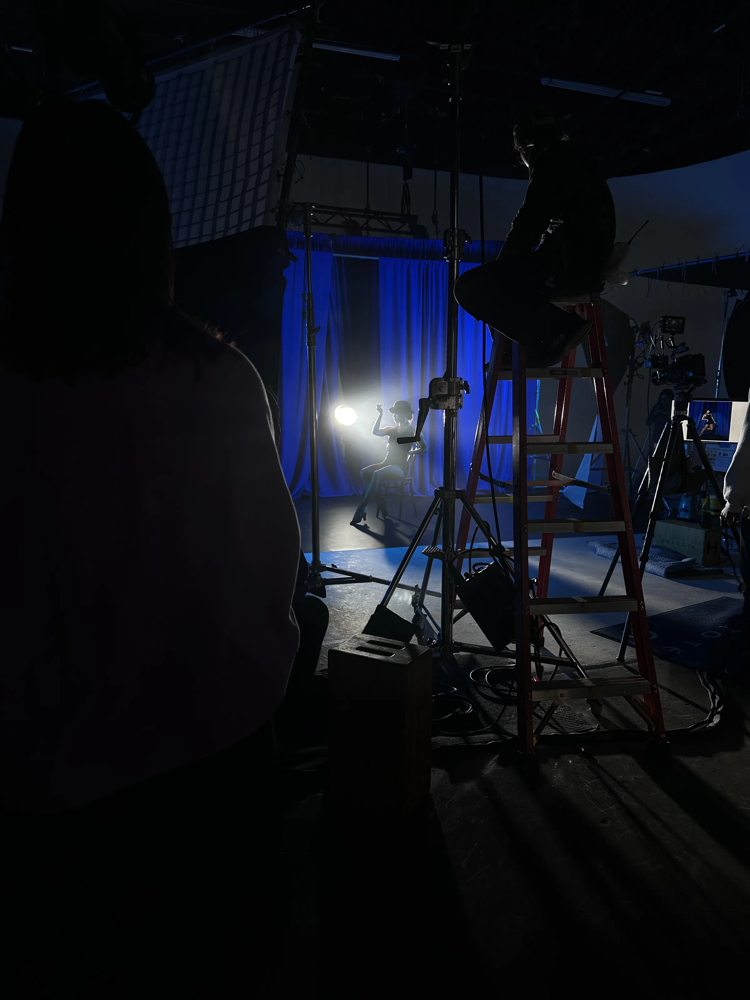
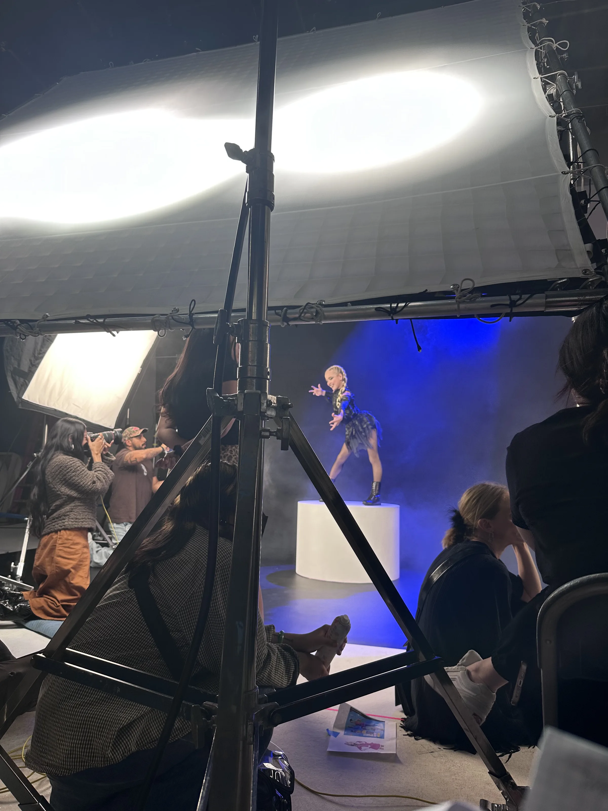
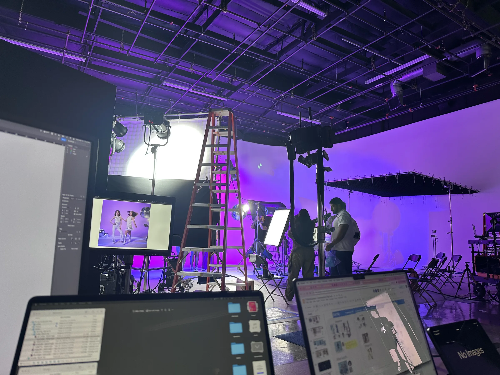
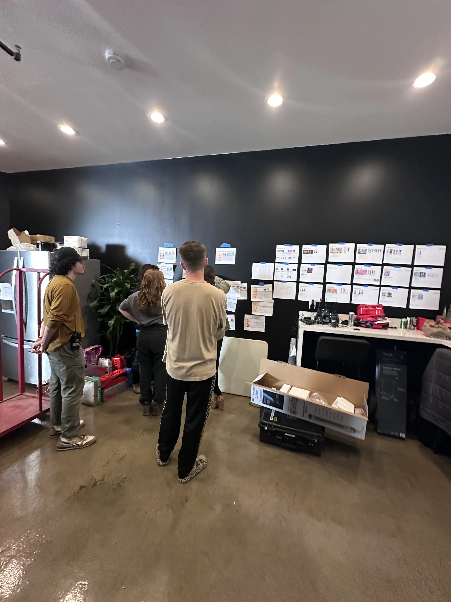
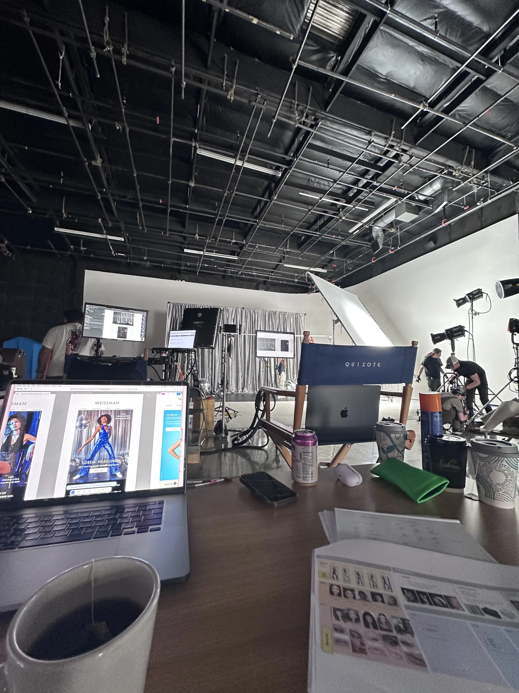